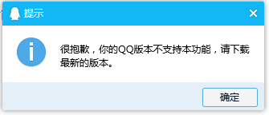

<a style="color:#fff; margin-left:8px; padding-top:12px;" target="_parent" href='tencent://message/?Menu=yes&uin=<%#Eval("QQ") %>&Site=说明文字&Service=200&sigT=2a0e37386280486ada2b5d5e69ee49186ccae1257fd9e1c9598af1f0b9c916067002a57aaaec8c8d'>注意：uin=<%#Eval("QQ")%>,这里动态绑定qq号，也可以直接填写qq，如果动态绑定qq号，绑定后的html代码添加<p></p>标签.
这时，点击会弹出版本不支持，如下图

然后我下载了最新版本，这时，点击还是会弹出上图的同样问题。
最终查看html源代码，发现uin=qq号,发现多了个<p></p>标签。于是修改如下：
$(function () {
$("#divId").find("a").each(function () {
var hrefVal = $(this).attr("href");
if (hrefVal.indexOf("<p>") > -1) {
$(this).attr("href", hrefVal.replace("<p>", "").replace("</p>", ""));//注意这行代码把<p></p>标签替换掉
}
});
});